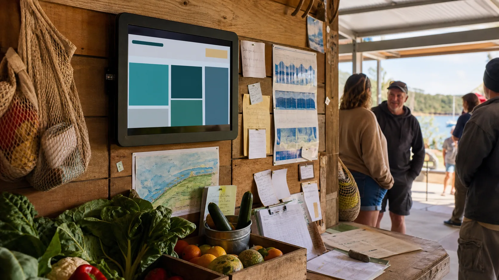

Good public content
Times, locations, expiry dates, safe donation categories, general volunteer calls and public contact paths.
Noticeboard bridge
The Shared Table can publish public-safe markdown notices for surplus, shifts, workshops, safety updates and grant windows.

Photorealistic editorial website section image for a Straddie public noticeboard network connected to community food events. Scene: a small low-power public screen or tablet on a timber wall inside an island community hall or ferry shelter, showing abstract blocks only with no readable text, beside paper notes, produce crates, a tide chart shape, and a small group nearby. It should feel like one public notice can move to screens, phones and paper fallback. No logos, no readable text, no QR codes, no brand names. Practical Australian coastal setting, warm light, 16:9 landscape, high detail.
Publishing rules
The noticeboard layer should publish what people need to know, not private operational detail. It is the public door, not the whole house.
Times, locations, expiry dates, safe donation categories, general volunteer calls and public contact paths.
Private addresses, vulnerable people, unverified claims, cultural knowledge, medical information and raw donor lists.
Grant windows can publish as noticeboard posts, then link back to the Grants Lab for deeper preparation.